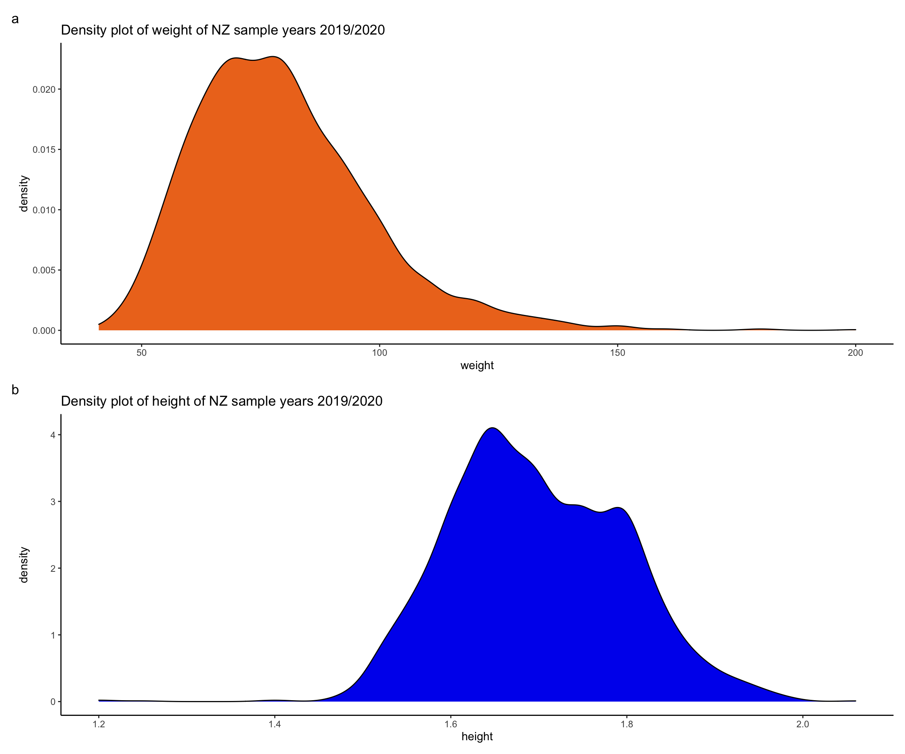
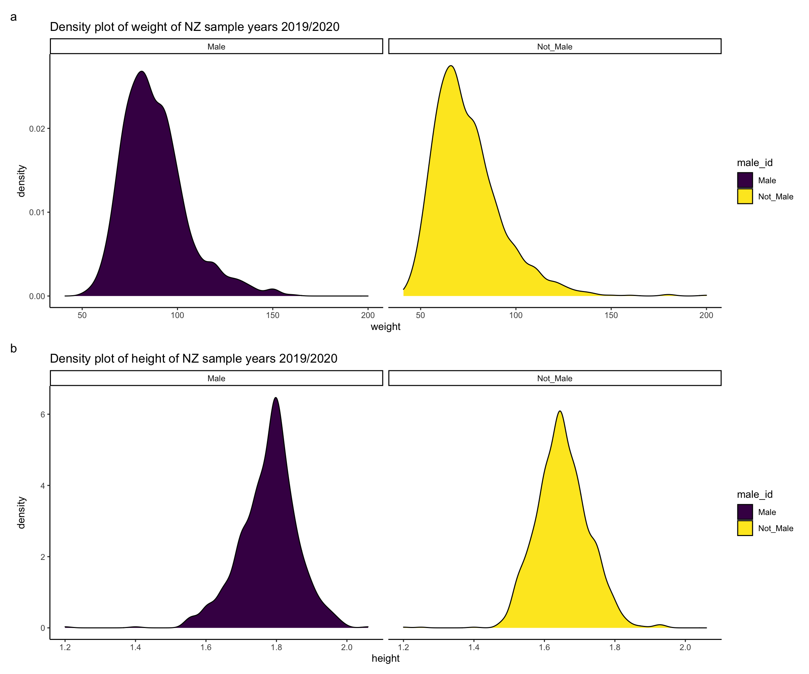
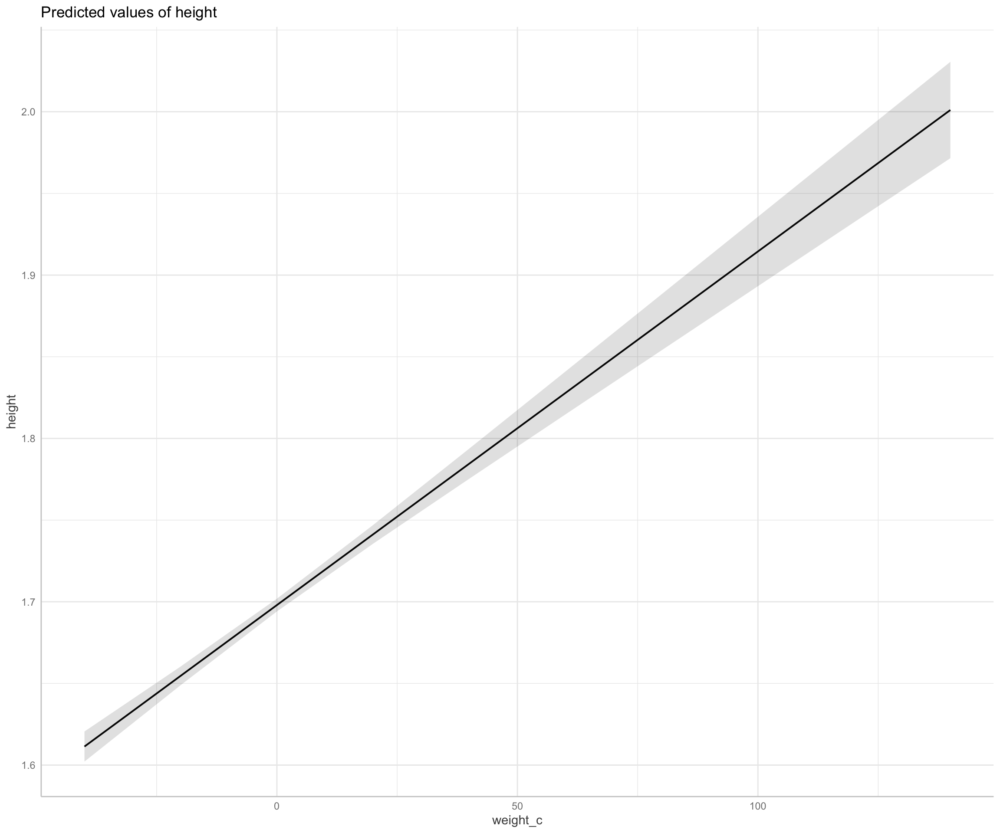
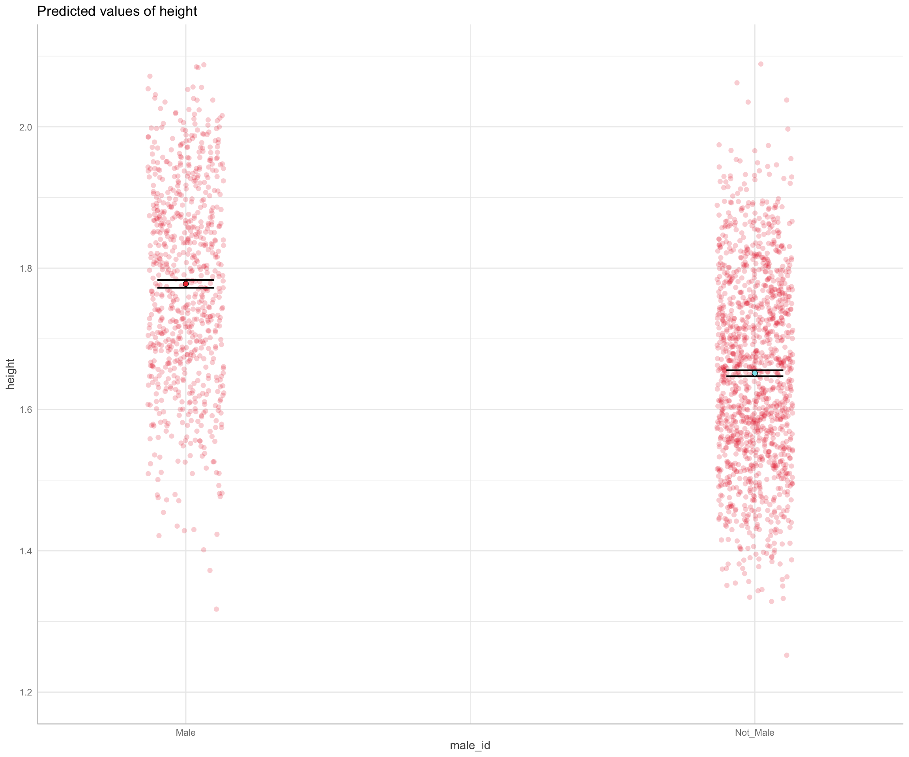
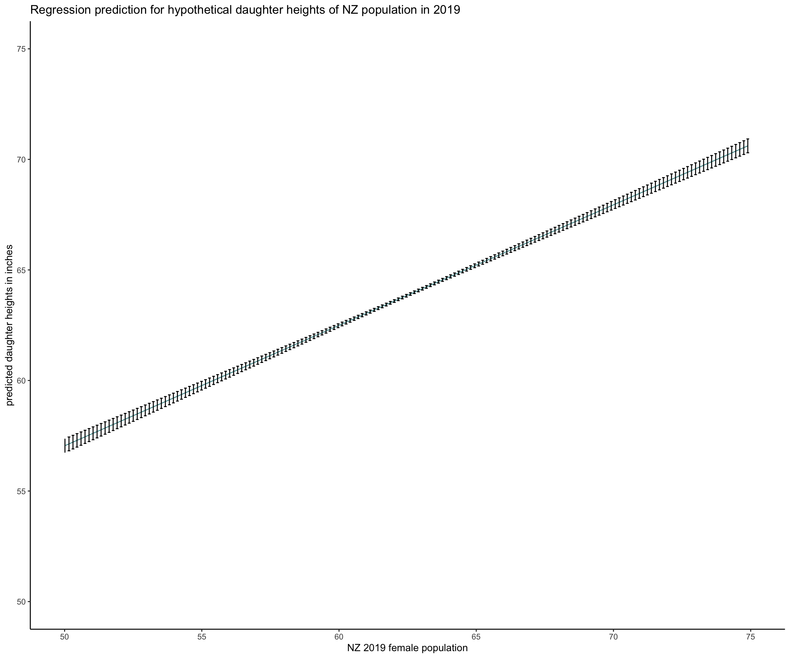
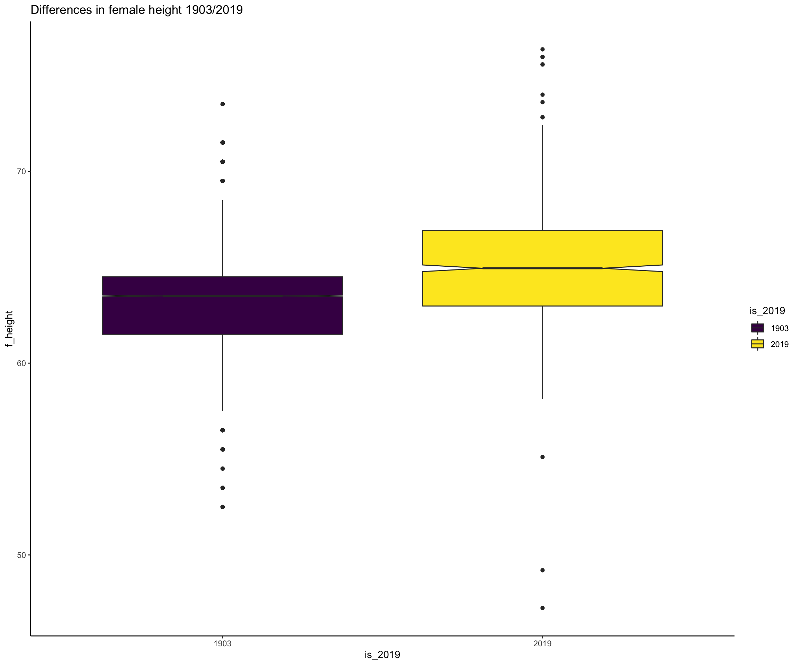
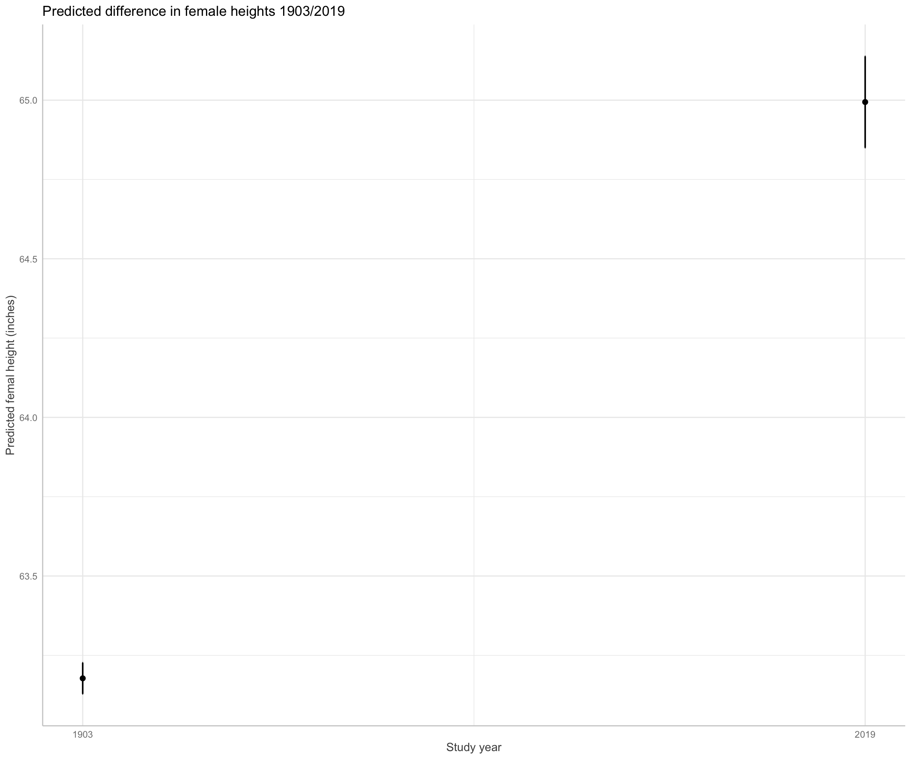

### Libraries
library("tidyverse")
library("patchwork")
library("lubridate")
library("kableExtra")
library("gtsummary")
# read data
nz_0 <- readr::read_csv2(
url(
"https://raw.githubusercontent.com/go-bayes/psych-447/main/data/nz/nz.csv"
)
)
# to relevel kessler 6 variables
f <-
c(
"None Of The Time",
"A Little Of The Time",
"Some Of The Time",
"Most Of The Time",
"All Of The Time"
)
# get data into shape
nz <- nz_0 %>%
dplyr::mutate_if(is.character, factor) %>%
select(
-c(
SWB.Kessler01,
SWB.Kessler02,
SWB.Kessler03,
SWB.Kessler04,
SWB.Kessler05,
SWB.Kessler06
)
) %>%
dplyr::mutate(Wave = as.factor(Wave)) %>%
mutate(FeelHopeless = forcats::fct_relevel(FeelHopeless, f)) %>%
mutate(FeelDepressed = forcats::fct_relevel(FeelDepressed, f)) %>%
mutate(FeelRestless = forcats::fct_relevel(FeelRestless, f)) %>%
mutate(EverythingIsEffort = forcats::fct_relevel(EverythingIsEffort, f)) %>%
mutate(FeelWorthless = forcats::fct_relevel(FeelWorthless, f)) %>%
mutate(FeelNervous = forcats::fct_relevel(FeelNervous, f)) %>%
dplyr::mutate(Wave = as.factor(Wave)) %>%
dplyr::mutate(male_id = as.factor(Male)) %>%
dplyr::mutate(date = make_date(year = 2009, month = 6, day = 30) + TSCORE)
### Import `Pearson and Lee` mother's and daughters data
md_df <- data.frame(read.table(
url(
"https://raw.githubusercontent.com/avehtari/ROS-Examples/master/PearsonLee/data/MotherDaughterHeights.txt"
),
header = TRUE
))
# Center mother's height for later example
md_df <- md_df %>%
dplyr::mutate(mother_height_c = as.numeric(scale(
mother_height, center = TRUE, scale = FALSE
)))
dplyr::glimpse(md_df)
Rows: 5,524
Columns: 3
$ daughter_height <dbl> 52.5, 52.5, 53.5, 53.5, 55.5, 55.5…
$ mother_height <dbl> 59.5, 59.5, 59.5, 59.5, 59.5, 59.5…
$ mother_height_c <dbl> -2.9987328, -2.9987328, -2.9987328…In 1903, Pearson and Lee collected 5,524 observations from mother/daughter height pairs. See lecture 5 for details
Notes
For all exercises below, use only the 2019 wave of the nz dataset.
Q1. Create a descriptive table and a descriptive graph for the HLTH.Weight and HLTH.Height variables in the nz dataset
Select HLTH.Weight, HLTH.Height from the nz dataset.
Filter only the 2019 wave.
Create a descriptive table and graph these two variables
Annotate your workflow (at each step, describe what you are doing and why).
Solution
library(gtable)
# select focal variables and rename them for clarity
nzdat <- nz %>%
dplyr::filter(Wave == 2019) %>%
dplyr::select(HLTH.Weight, HLTH.Height, male_id) %>%
dplyr::rename(weight = HLTH.Weight,
height = HLTH.Height) %>%
dplyr::select(weight, height, male_id) %>%
dplyr::mutate(weight_c = as.numeric(scale(
weight, scale = F, center = TRUE
)))
# create table
nzdat %>%
dplyr::select(weight,
height) %>%
gtsummary::tbl_summary(
#by = Wave,
statistic = list(
all_continuous() ~ "{mean} ({sd})",
all_categorical() ~ "{n} / {N} ({p}%)"
),
digits = all_continuous() ~ 2,
missing_text = "(Missing)"
) %>%
bold_labels()
| Characteristic | N = 2,0631 |
|---|---|
| weight | 79.68 (18.79) |
| (Missing) | 22 |
| height | 1.70 (0.10) |
| (Missing) | 23 |
|
1
Mean (SD)
|
|
Here’s another approach:
library(table1)
# filter 2019 wave
nz1 <- nz %>%
dplyr::filter(Wave == 2019)
# nicer labels
table1::label(nz1$HLTH.Weight) <- "Weight"
table1::label(nz1$HLTH.Height) <- "Height"
# table
table1::table1(~ HLTH.Weight + HLTH.Height, data = nz1)
| Overall (N=2063) |
|
|---|---|
| Weight | |
| Mean (SD) | 79.7 (18.8) |
| Median [Min, Max] | 78.0 [41.0, 200] |
| Missing | 22 (1.1%) |
| Height | |
| Mean (SD) | 1.70 (0.0984) |
| Median [Min, Max] | 1.69 [1.20, 2.06] |
| Missing | 23 (1.1%) |
Create graph
nzdat1 <- nzdat%>%
dplyr::filter(!is.na(weight),
!is.na(height),
!is.na(male_id)) # filter na's for density plots
weight_density <-ggplot2::ggplot(data = nzdat1, aes(x = weight)) + geom_density(fill = "chocolate2") +
labs(title = "Density plot of weight of NZ sample years 2019/2020") + theme_classic()
height_density <-ggplot2::ggplot(data = nzdat1, aes(x = height)) + geom_density(fill ="blue2") +
labs(title = "Density plot of height of NZ sample years 2019/2020") + theme_classic()
weight_density / height_density + plot_annotation(tag_levels = 'a')

Q2. Write up a sample summary of the HLTH.Weight and HLTH.Height variables in the nz dataset in APA style.
Using the analysis in Q1, describe Height and Weight in the nz dataset
Write brief APA methods summary for these two variables.
Note: *if useful, use the ‘male_id’ variable to clarify interesting or puzzling features of the HLTH.Weight and HLTH.Height responses.
Solution
Why aren’t the distributions of height and weight normal? Likely there is a hidden co-variate.
Let’s assess whether there might be differences in these parameters that might owe to sex.
# plot of weight ~ is_male
weight_density2 <-
ggplot2::ggplot(data = nzdat1, aes(x = weight, fill = male_id)) +
geom_density() +
labs(title = "Density plot of weight of NZ sample years 2019/2020") +
theme_classic() +
facet_grid(. ~ male_id)
weight_density2 <-
weight_density2 +
aes(fill = male_id) +
scale_fill_viridis_d() # nicer colour
# plot of height ~ is_male
height_density2 <-
height_density2 <-
ggplot2::ggplot(data = nzdat1, aes(x = height, fill = male_id)) +
geom_density() +
labs(title = "Density plot of height of NZ sample years 2019/2020") +
theme_classic() +
facet_grid(. ~ male_id) +
aes(fill = male_id) +
scale_fill_viridis_d() # nicer colour
height_density2 <- height_density2 + aes(fill = male_id)
weight_density2 / height_density2 + plot_annotation(tag_levels = 'a')

Q3. Regress height ~ weight and report results
Using the nz dataset, write a regression model for height as predicted by weight.
Create a table for your results.
Create a graphs/graphs to clarify the results of your regression model.
Briefly report your results.
Solution
Model:
# regression of height ~ weight
mod1 <- lm(height ~ weight_c, data = nzdat)
Table:
sjPlot::tab_model(mod1)
| height | |||
|---|---|---|---|
| Predictors | Estimates | CI | p |
| (Intercept) | 1.70 | 1.69 – 1.70 | <0.001 |
| weight_c | 0.00 | 0.00 – 0.00 | <0.001 |
| Observations | 2031 | ||
| R2 / R2 adjusted | 0.169 / 0.169 | ||
Prediction
sjPlot::tab_model(mod1)
| height | |||
|---|---|---|---|
| Predictors | Estimates | CI | p |
| (Intercept) | 1.70 | 1.69 – 1.70 | <0.001 |
| weight_c | 0.00 | 0.00 – 0.00 | <0.001 |
| Observations | 2031 | ||
| R2 / R2 adjusted | 0.169 / 0.169 | ||

Briefly report your results. (note: please replace “significant” with "statistically significant.)
report::report(mod1)
We fitted a linear model (estimated using OLS) to predict height with weight_c (formula: height ~ weight_c). The model explains a significant and moderate proportion of variance (R2 = 0.17, F(1, 2029) = 412.87, p < .001, adj. R2 = 0.17). The model's intercept, corresponding to weight_c = 0, is at 1.70 (95% CI [1.69, 1.70], t(2029) = 852.41, p < .001). Within this model:
- The effect of weight_c is significantly positive (beta = 2.17e-03, 95% CI [1.96e-03, 2.37e-03], t(2029) = 20.32, p < .001; Std. beta = 0.41, 95% CI [0.37, 0.45])
Standardized parameters were obtained by fitting the model on a standardized version of the dataset.Q4. Regress height ~ male_id and report results
Using the nz dataset, write a regression model for height as predicted by male_id
Create a table for your results.
Create a graph/graphs to clarify the results of your regression model.
Briefly report your results.
Solution
Model and table:
| height | |||
|---|---|---|---|
| Predictors | Estimates | CI | p |
| (Intercept) | 1.78 | 1.77 – 1.78 | <0.001 |
| male_id [Not_Male] | -0.13 | -0.13 – -0.12 | <0.001 |
| Observations | 2034 | ||
| R2 / R2 adjusted | 0.384 / 0.383 | ||
Graph:
# plot over the range of the data
pl1<- plot(
ggeffects::ggpredict(mod2, terms = "male_id [all]"),
add.data = TRUE,
dot.alpha = .2
)
pl1 +
scale_y_continuous(limits = c(1.2, 2.1)) + # range of data
geom_point(colour = c("brown2", "cadetblue2"))

Report
report::report(mod1)
We fitted a linear model (estimated using OLS) to predict height with weight_c (formula: height ~ weight_c). The model explains a significant and moderate proportion of variance (R2 = 0.17, F(1, 2029) = 412.87, p < .001, adj. R2 = 0.17). The model's intercept, corresponding to weight_c = 0, is at 1.70 (95% CI [1.69, 1.70], t(2029) = 852.41, p < .001). Within this model:
- The effect of weight_c is significantly positive (beta = 2.17e-03, 95% CI [1.96e-03, 2.37e-03], t(2029) = 20.32, p < .001; Std. beta = 0.41, 95% CI [0.37, 0.45])
Standardized parameters were obtained by fitting the model on a standardized version of the dataset.Q5. Regression to predict
Using the regression coefficients from the Pearson and Lee 1903 dataset, predict the heights of daughters of women in the nz dataset.
Solutoin
# model for daughter height from mother height
mpf<- lm(daughter_height ~ mother_height, data = md_df)
# create data frame of not_male's in 2019
# Notice problem. not_male != woman
# additionally, woman != mother!
nz2 <-nzdat %>%
filter(male_id == "Not_Male")%>% # not_males
dplyr::select(height) %>% # variable of interest
dplyr::mutate(mother_height = height * 39.36)%>% # Convert meters to inches
dplyr::select(mother_height)%>%
dplyr::arrange((mother_height))
# find min and max heights, store as objects
mnh<-min(nz2$mother_height, na.rm = TRUE)
mxh<-max(nz2$mother_height, na.rm = TRUE)
# expand grid, use stored objects to define boundaries.
ndat2<-expand.grid(mother_height = seq(from = mnh, to = mxh, length.out=200))
# use the `predict` function to create a new response using the pearson and fox regression model
pr2<- predict(mpf, type = "response", interval = "confidence", newdata =ndat2)
# create a new dataframe for the response variables, following the method in lecture 5
# combine variables into a data frame
newdata2 <- data.frame(ndat2,pr2)
# graph the expected average hypothetical heights of "daughters"
predplot2 <-
ggplot(data = newdata2, aes(x = mother_height, y = fit)) +
geom_line(colour = "cadetblue") + geom_errorbar(aes(ymin = lwr, ymax = upr), width = .1) + scale_x_continuous(limits = c(50, 75)) + scale_y_continuous(limits = c(50, 75)) + theme_classic() +
xlab("NZ 2019 female population") +
ylab("predicted daughter heights in inches") +
labs(title = "Regression prediction for hypothetical daughter heights of NZ population in 2019 ")
# plot
predplot2

Q6. Bonus, not marked
On average, how much taller or shorter are women in New Zealand as sampled in 2019 nz dataset compared with women in 1903 as sampled in the Pearson and Lee dataset.
Solution
#create var for 1903 dataset
md_df2 <- md_df %>%
dplyr::select(mother_height, daughter_height) %>%
tidyr::pivot_longer(everything(),
names_to = c("height")) %>%
dplyr::select(value) %>%
dplyr::rename(f_height = value) %>%
dplyr::mutate(is_2019 = factor(rep("1903", nrow(.)))) # create identifier
# create var for 2019 dataset
nz_df2 <-
nz2 %>% # dataset with only women and height transformed to inches
dplyr::rename(f_height = mother_height) %>%
dplyr::mutate(is_2019 = factor(rep("2019", nrow(.))))
# combine data frames row-wise
rdf <- rbind(md_df2, nz_df2)
# look at data structure
dplyr::glimpse(rdf)
Rows: 12,353
Columns: 2
$ f_height <dbl> 59.5, 52.5, 59.5, 52.5, 59.5, 53.5, 59.5,…
$ is_2019 <fct> 1903, 1903, 1903, 1903, 1903, 1903, 1903,…Look at heights in sample
ggplot2::ggplot(data = rdf, aes(x= is_2019, y= f_height, fill = is_2019))+ geom_boxplot(notch = TRUE) +
labs(title = "Differences in female height 1903/2019") + theme_classic() + scale_fill_viridis_d()

Predict heights out of sample
| f_height | |||
|---|---|---|---|
| Predictors | Estimates | CI | p |
| (Intercept) | 63.18 | 63.13 – 63.23 | <0.001 |
| is_2019 [2019] | 1.82 | 1.66 – 1.97 | <0.001 |
| Observations | 12336 | ||
| R2 / R2 adjusted | 0.042 / 0.042 | ||
Women in 2019 are taller
report::report(mod3)
We fitted a linear model (estimated using OLS) to predict f_height with is_2019 (formula: f_height ~ is_2019). The model explains a significant and weak proportion of variance (R2 = 0.04, F(1, 12334) = 546.73, p < .001, adj. R2 = 0.04). The model's intercept, corresponding to is_2019 = 1903, is at 63.18 (95% CI [63.13, 63.23], t(12334) = 2516.62, p < .001). Within this model:
- The effect of is_2019 [2019] is significantly positive (beta = 1.82, 95% CI [1.66, 1.97], t(12334) = 23.38, p < .001; Std. beta = 0.67, 95% CI [0.62, 0.73])
Standardized parameters were obtained by fitting the model on a standardized version of the dataset.plot(
ggeffects::ggpredict(mod3, terms = "is_2019"),
add.data = F,
dot.alpha = .2
) + labs(title = "Predicted difference in female heights 1903/2019") +
xlab("Study year") +
ylab ("Predicted femal height (inches)")

Graph with predicted points:
plot(
ggeffects::ggpredict(mod3, terms = "is_2019"),
add.data = F,
dot.alpha = .2
) + labs(title = "Predicted difference in female heights 1903/2019") +
xlab("Study year") +
ylab ("Predicted femal height (inches)")